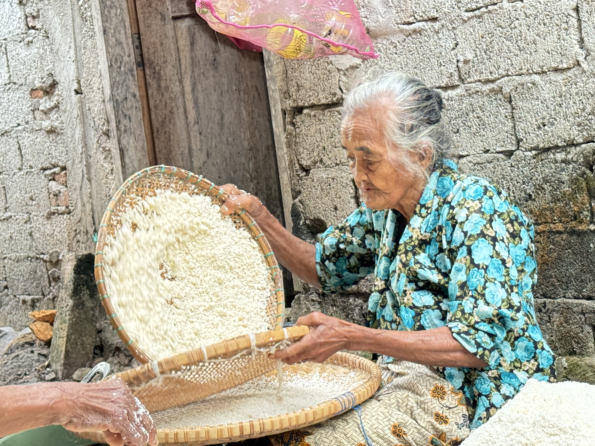

Oyek Bu Sulis
Rp 7.000 - 15.000
Oyek merupakan makanan tradisional yang dibuat dari bahan dasar singkong pilihan. Sejak dahulu, masyarakat Desa Logandu telah mengolah singkong menjadi oyek sebagai sumber pangan alternatif pengganti nasi. Dengan proses pengolahan yang masih mempertahankan cara tradisional, oyek memiliki cita rasa khas yang tidak dimiliki makanan lain.
Hubungi Penjual